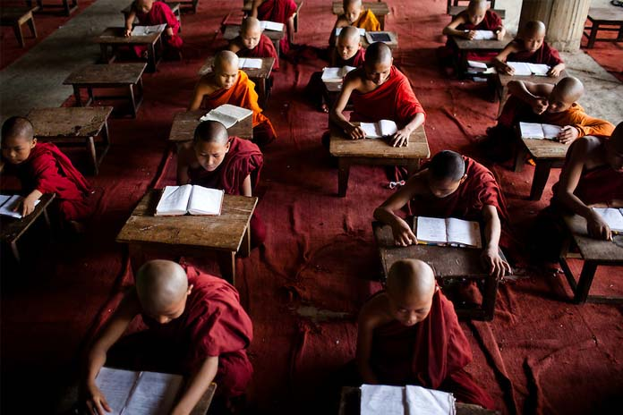
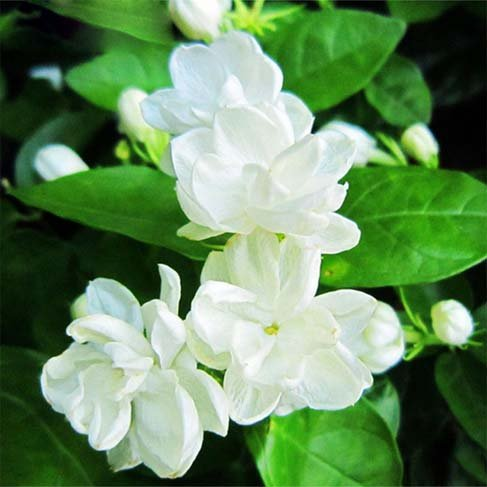

Nayoun(Nayone):June
Written by Khin Myo Chit and Junior Win ( Flowers & Festivals )
3.Nayoun(Nayone)
Examinatons in the Golden Books.
As the season changes to Gemini. br jasmine and mulei
buds, blooms. and pollins,
strew their fragrance about.
Amid the sky,
in heavens high above,
the golden star king Antares
is radiant.
A Month of Thunder, Lightning and Rain
With Nayone (June), the third month of the Myanmar calender, the moonsoon is in full swing. Gone are the lyrical dreams inspired by showers that fall like multicoloured bead strings throught the sun beams and fragrant vapours rising out of the sun-scorched earth, as gentle drops fall like mercy from heaven.
Now, everything is wet .... just WET through and through.Dark skies, torrential rains and storms. "Fair is foul, and foul is fair " sort of weather.Anyway it is a change, perhaps not so nice as one would wish, but a change from those hot days.Nature is in full splendour and the mind "creates a green thought in a green shade".The weather is ideal for curling up on a sofa with a nice book.It is also story time when kids gather round the old granny.
If the blonde, blue-eyed children of the West are fascinated by the story of Persephone who brings in spring, sunshine and flowers, the Myanmar children are no less so by the legend of the rains caused by the warfare between the gods above.
The booming of thunder was the sound of the celestial drum whose frame was made of the shell of a gaint crab who breakfasted on mammoth mastodons.The crab's claws served as drumsticks.Thagyarmin.King of the celestials(he's the same who comes down to bring in the New Year, remember?), strikes the drum to rally his forces.
Here we are again, another story featuring Thagyarmin.The whole thing began when the first Thagyarmin started the dynasty at the Abode of the Celestials.
Magha,the Good Samaritan
Thagyarmin, before he become what he is , was a human being.His name was Magha.Born of a rich and noble family, he devoted himself to good works.He formed a group of 30 men and organized people to do good deed.. repairing roads, building public rest houses, bridges, and digging wells.
Magha's wife Sujata was a woman of beauty and charm and she was a happy-go-lucky type ,content to enjoy a life of ease and pleasure.Megha doted on her and he let her have her way.
When Megha's life span ended, he was reborn in the celestial regions.His thirty companions were with him.They named their abode Tavatimsa, the Abode of the Thirty Gods.Magha was almost happy, but not quite, because among his good friends and companions, his beloved Sujata was missing. Thagyarmin , for this was Magha's new title , longed for Sujata...which was rather surprising, since there was no dearth of nymphs, whatwith a harem of billions.
Thagyarmin waited and waited for Sujata to join him, but she did not come.With his omniscient powers he looked for her in other planes of existences.It was a sad day for him when he found that his beloved ,gay, fun-loving Sujata, lacking the strength of good deeds, was reborn in the animal world..... a crane in the forest.
It was fortunate that the life span of celestials was very very long.... one dsay in the life of a celestial is approximately a thousand years in human life.So Thagyarmin had time to wait for Sujata and help her to gain enought merit to be reborn in the celestial abode.
Thargyarmin went to Sujata, the crane and made known to her who he was and took her to see the grandeur, bliss and pleasures of his abode.He told her that all these could be hers, if she would only follow his advice. If she wished to be reborn in the celestial abode, she must di deeds of merit. She could practise self-denial and abstain from talking.Life, which was one of the Five precepts humans observe on earth.
It was pretty hard for a crane, a bird of prey living on live things like fish and insects, to abstain from taking life, but she promised to do so.Thagyarmin had made her realize how she had missed being reborn in the celestial abode, because of her failure to do her share in her husband's good deeds.
Sujata was determined to do her best, she lived on things other than live ones; one day she saw a fish lying still like dead; she picked it like by its head but its tail wagged.Sujata dropped it.She would rather go hungry than kill for food.It was not long before she died of starvation.
It looked as if Sujata had not done enough.She was reborn as a human being ... a potter's daughter.Thagyarmin,ever watching her, saw that the family was poor.It would be difficult for her to do good deeds.So he took the appearanceof an old man selling pumpkins.When Sujata saw the old man bowed down under the weight of his wares, her heart was filled with pity.She called the old vendor and offered to buy the whole lot of pumpkins just out of compassion.
The old vendor, Thagyarmin in disguise, let her have the pumpkins at a taken price and went away.Only when Sujata started to prepare the family meal featuring a dish of pumpkings, did she notice that the furits were not fit for eating.... they were of solid gold! So the family became rich overnight and Sujata devoled herself to good works.She simply gave away her riches in charity.
While waiting for Sujata to join him, Thargyarmin was busy consolidating his position in the celestial abode.Some other celestials were there before him.They were called Asuras.Their deeds of merit of the past lives had blessed them with god-like appearance, super-normal powers and a place in the celestial abode.THey , however, were too drunk in their blissful state to be good.They indulged in all kinds of debauchery.
Naturally Thargyarmin did not want such satyrs in his abode.One day, while the Asuras were drunk deep in the celestial liquor, Thargyarmin and his friends drove them out of their territory.The Asuras did not realize their fallen state until the season of coral flowers.Up in the celestial abode, there was a tree that blooned exotic red flowers of incomparable beauty and sweetness. Only when the fallen ones saw the common flowers with-out any scent on the bushes, did they realize their loss.
The Asuras immediately rallied their forces to wage war on Thagyarmin.The beating of the war drums sounded like thunder and the flashing of arms fitted through the skies like lightning.All the heavenly regions were disturbed and clouds melted in rain-drops.
It was a twist of fate that Sujata, after living a good and virtuous life, was reborn as the daughter of the king of Asuras. She was famed for her beauty and goodness and many celestial priness desired her . So a day was fixed for the choosing of her bridegroom.On that day Thagyarmin joined the goodly company of celestial princess and won her love.He carride her off much to the indignation of the Asura king.Thagyarmin made Sujata his Chiaf Queen and celebrated the happy event by taking the title Sujapati,the Lord and Husband of Sujata.It was his best loved and proudest title.Even as children listen enthralled to the story of Thagyarmin and Asuras, young people dream of the kind of love that lasted not just one life but many many lives.
It is in this month of Nayon that scriptural examinations for monks and nuns are held.The lay people, mindful of the service of the monks and their life-long-dedication to the study of the Buddha's teachings, do their best to supply the comforts and amenities of the candidates.It is necessary to offer daily alms food to those who come from other towns to the examination centres.Contributions to the cause are donated by the community and organizations.
Organization take charge of offering daily alms food to a large number of monks.Each household takes in one or more monks, according to their means. Everyone is anxious to do the meritorious deed of giving support to the monks, the Order of the Sangha, custodians of the Buddha's Dhamma.
Apart from written examinations, there are those where the candidates have to recite all the scriptures by rote. It is a tremendous undertaking to commit to memory all the Buddha's discourse, known as the Three Baskets of Learning.
There are but few who could pass the recitation tests and those who do are showered with honours and gifts.It is in deepgratitude to the Theras(Monks) of olden times, who enshrined the Word of the Buddha in their hearts, that the tradition of recitation by rote is still kept up to this day.
It was only after 400 years after the demise of the Buddha that the discourses were written down on palm leaves. There were hard times when there was famine and monks had barely anything to eat.They buried themselves up to the waist in sand dunes to ease the rumblings of their empty stomachs and went on with their daily recitaions of the discourses.
In this way, the monks kept the Word of the Buddha alive even without sophisticated tools like tapr recorders and microfilms.Today scriptural examinations are an important feature in Buddgist life.This month is a busy time for Buddhist households.There is a lot to do for the monk candidates who carry aloft the torch of Buddhist learning by dedicated study and devotion.